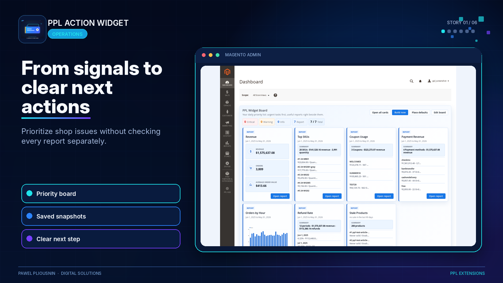
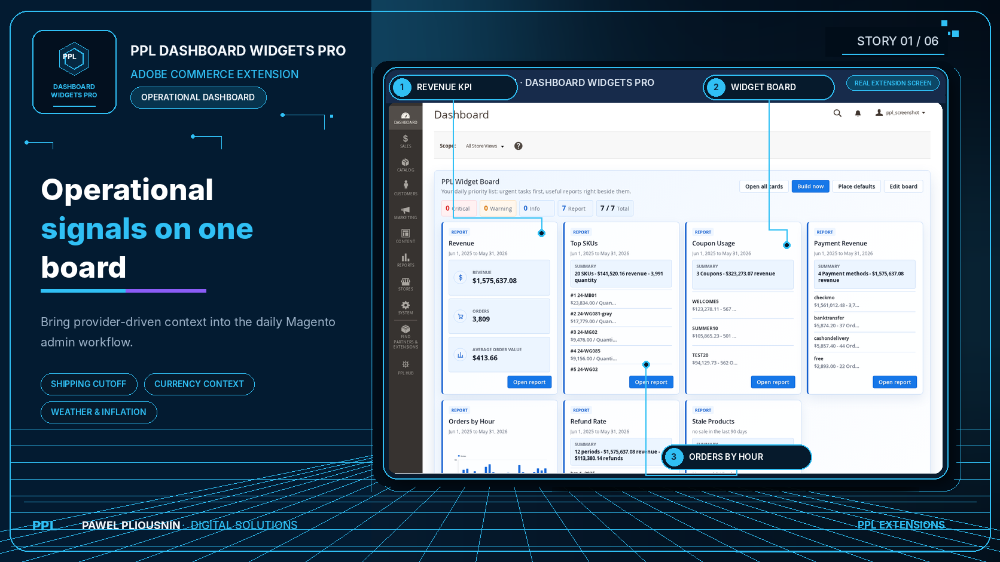
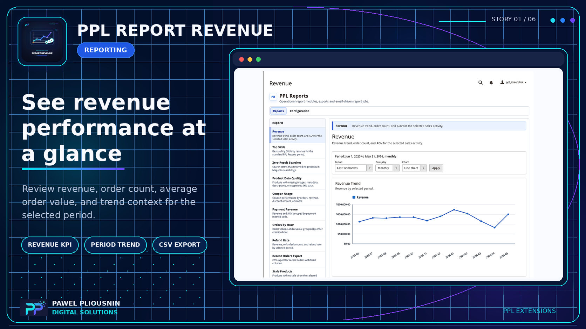

PPL Action Widget
Prioritized admin action cards with severity, evidence, recommendation, follow-up actions, dismissals, exports and board health checks.
PPL Action Widget reads store and report signals and turns them into prioritized admin cards with severity, evidence, recommendations and follow-up actions. Dashboard Widgets Pro adds operational context, while PPL Reports provide focused revenue, coupon, SKU, refund, search and catalog-quality evidence.

Instead of opening five reports and deciding what looks unusual, admins start with a board of detected issues. Each card explains what was found, how severe it is, what evidence supports it and what the next step should be.
Revenue, refund, coupon, zero-result, stale product, SKU and product-quality reports expose the operational signals.
Detector thresholds and cron-backed snapshots decide which signals deserve a visible action card.
Handled cards can be dismissed so the board stays useful instead of becoming another noisy dashboard.
The bundle works best when the action board, dashboard widgets and report evidence are positioned together.
Prioritized admin action cards with severity, evidence, recommendation, follow-up actions, dismissals, exports and board health checks.
Operational widgets for shipping cutoff, holidays, currency, weather, inflation, trend and enrichment review signals.
Shared reports workspace, registry, period controls, export behavior, chart support and scheduled email infrastructure.

External and provider-driven signals sit near the reports and action cards merchants already review.

Focused report modules answer concrete questions and feed dashboard or action surfaces where supported.
The buyer problem is not “I need one more report.” The real problem is that important store signals stay hidden across dashboards, exports and spreadsheets. A bundle page makes the value obvious: reports create evidence, widgets create visibility and Action Widget creates priority.
Direct product links are shown where available. Report Core, Admin Daily Digest and Dashboard Widgets Pro currently point to the partner profile.